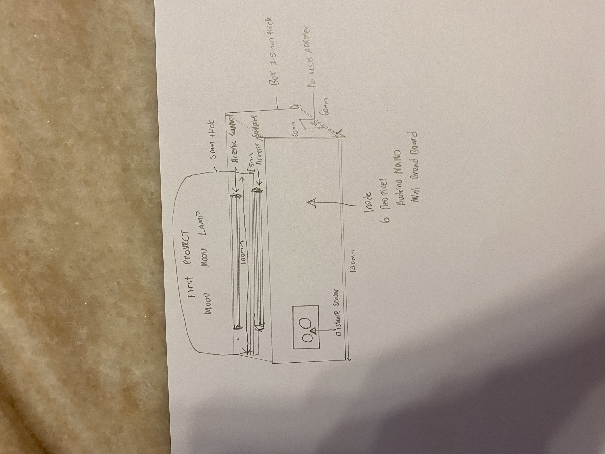
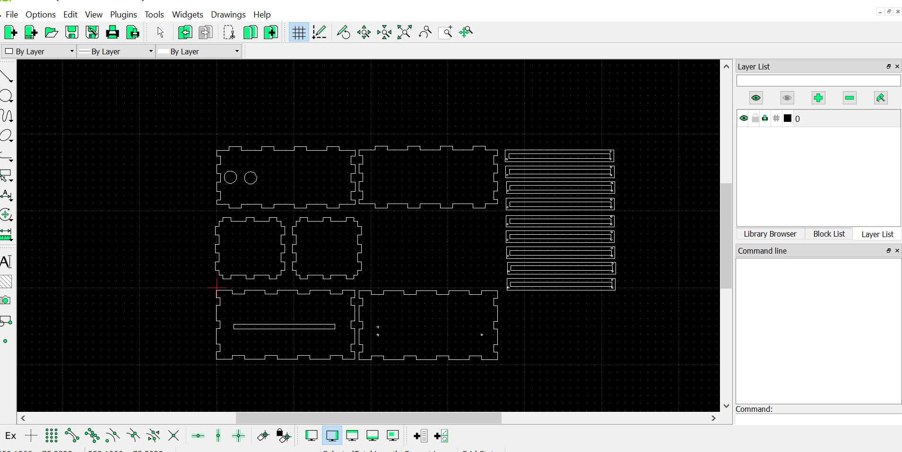
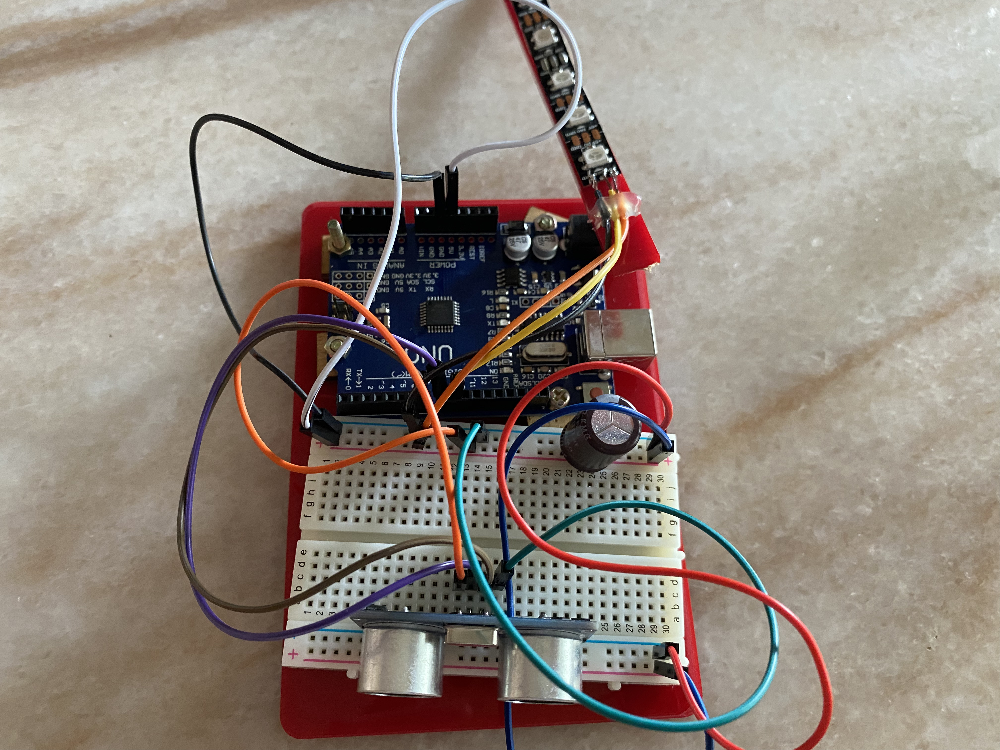

Week 1 CAD Drawing and Design
Draft Drawing
Pertaining to the drawing i apologised that my drawing was not that good
The above is the draft of my project through manual drawing and the components that i am going to use which consists of a distance sensor, audrino nano , 6 strip neopixel ,small breadboard and connections cable.
CAD drawing
Length for the box is 180mm, Width 90mm and Height is 80mm and thickness is 5mm
The above is the box for mood lamp that i am planning to laser cut
The above is an neopixel support for the laser cut box and the length of the support is 132mm length, width is 10mm
The above support is the prototype i am planning to 3D print

For baby yoda graphics this is the website that i have got from Visit this website for Yoda Graphics!
After i got the graphic then i save the image as png and after i have save the image as png i then covert the file to svg file after i have converted i will then import the graphic to the acrylic peice that i have designed in fusion 360 through svg.
Length of the acrylic piece is 131mm and height is 6mm and thickness is 6mm
The above is the arcylic for the mood lamp that i am going to laser cut
Week 2 laser cutting & 3D printing
Laser Cutting Part
This is the layout for the moodlamp after i have converted the parts into a DXF file. after i have lay out the piece at the libre cad i will have to save the fie at the thumbdrive to prepare for laser cut

This is the layout for the acylic after i have converted the part into DXF file same as the box after i have lay out the piece i will save at the thumbdrive to prepare for laser cut.
The above picture shows the box that i have finished laser cutting.The settings for laser cutting at corel draw is hairline for vector cutting and engraving for acrylic is you have to on the air assist Power is 80 percent, speed 80 and frequency is 200 PPI
The above picture shows the finished product for the box after i have assemble together

The above picture shows the acylic i have finished laser cutting the settings for laser cutting at corel draw is hairline for vector cutting and engraving for acrylic is you have to on the air assist Power is 80 percent, speed 80 percent and frequency is 800 PPI
The above picture shows the acylic shows the finished product

The above picture shows the finished product after i have took out the plastic of the acrylic
3D Printing Part


The above three pictures shows the settings for 3d printing for the neopixel support this includes norzzel 0.4, layer height 0.2 wall thickness 0.8 infilldensity 20 print speed 80 mms and support 50 after i have set everything i will slice the prototype using and after i have slice i will check the print time and the time taken is 16 mins, the final steps is convert the file to g code and save it into a SD card to be ready for printing.
The above picture shows the neopixel support that i have finished 3D print
Week 3 Assemble of Prototype and Circuit design
The above is the circuit that i had did for manual connect using Audrino Uno
The above is the circuit that i had did through thinkercad connections

The above picture shows the final connections and shows the conversion of using uno to nano through audrino IDE.By converting to uno to nano you can get the steps from this website: webiste for converting UNO to NANO
#include
#ifdef __AVR__
#include // Required for 16 MHz Adafruit Trinket
#endif
// Digital IO pin connected to the button. This will be driven with a
// pull-up resistor so the switch pulls the pin to ground momentarily.
// On a high -> low transition the button press logic will execute.
#define PIXEL_PIN 9 // Digital IO pin connected to the NeoPixels.
#define PIXEL_COUNT 6 // Number of NeoPixels
// Declare our NeoPixel strip object:
Adafruit_NeoPixel strip(PIXEL_COUNT, PIXEL_PIN, NEO_GRB + NEO_KHZ800);
// Argument 1 = Number of pixels in NeoPixel strip
// Argument 2 = Arduino pin number (most are valid)
// Argument 3 = Pixel type flags, add together as needed:
// NEO_KHZ800 800 KHz bitstream (most NeoPixel products w/WS2812 LEDs)
// NEO_KHZ400 400 KHz (classic 'v1' (not v2) FLORA pixels, WS2811 drivers)
// NEO_GRB Pixels are wired for GRB bitstream (most NeoPixel products)
// NEO_RGB Pixels are wired for RGB bitstream (v1 FLORA pixels, not v2)
// NEO_RGBW Pixels are wired for RGBW bitstream (NeoPixel RGBW products)
int mode = 0; // Currently-active animation mode, 0-9
const int trigPin = 8;
const int echoPin = 7;
long duration;
int distance;
void setup() {
strip.begin(); // Initialize NeoPixel strip object (REQUIRED)
strip.show(); // Initialize all pixels to 'off'
pinMode(trigPin, OUTPUT);
pinMode(echoPin, INPUT);
Serial.begin(9600);
}
void loop() {
digitalWrite(trigPin, LOW);
delayMicroseconds(2);
digitalWrite(trigPin, HIGH);
delayMicroseconds(10);
digitalWrite(trigPin, LOW);
duration = pulseIn(echoPin, HIGH);
distance = (duration*.0343)/2;
Serial.print("Distance: ");
Serial.println(distance);
delay(100);
if(distance <= 4){
if(++mode > 8) mode = 0; // Advance to next mode, wrap around after #8
switch(mode) { // Start the new animation...
case 0:
colorWipe(strip.Color( 0, 0, 0), 50); // Black/off
delay(10);
break;
case 1:
colorWipe(strip.Color(255, 0, 255), 50); // purple
delay(10);
break;
case 2:
colorWipe(strip.Color( 255, 255, 0), 50); // yeloow?
delay(10);
break;
case 3:
colorWipe(strip.Color( 0, 255, 255), 50); // cyan
delay(10);
break;
case 4:
theaterChase(strip.Color(127, 127, 127), 50); // White
break;
case 5:
theaterChase(strip.Color( 0, 0, 255), 50); // blue
break;
case 6:
theaterChase(strip.Color( 0, 255, 0), 50); // green
break;
case 7:
rainbow(10);
break;
case 8:
theaterChaseRainbow(50);
break;
}
}
}
// Fill strip pixels one after another with a color. Strip is NOT cleared
// first; anything there will be covered pixel by pixel. Pass in color
// (as a single 'packed' 32-bit value, which you can get by calling
// strip.Color(red, green, blue) as shown in the loop() function above),
// and a delay time (in milliseconds) between pixels.
void colorWipe(uint32_t color, int wait) {
for(int i=0; i RGB
strip.setPixelColor(c, color); // Set pixel 'c' to value 'color'
}
strip.show(); // Update strip with new contents
delay(wait); // Pause for a moment
firstPixelHue += 65536 / 90; // One cycle of color wheel over 90 frames
}
}
}
The above is the code for the mood lamp
Visit this website to get the code Visit this website to get ConnectionsThe above is the two website that i refer to for my connections and codes.
Week 4 Integrations , Slides Preparations and Video Recordings


The above two pictures shows the completed mood lamp
PowerPoint
Click here for Presentation Slides Click
{kind=link}
Project Owner Card
Click here for Project Owner Card Click